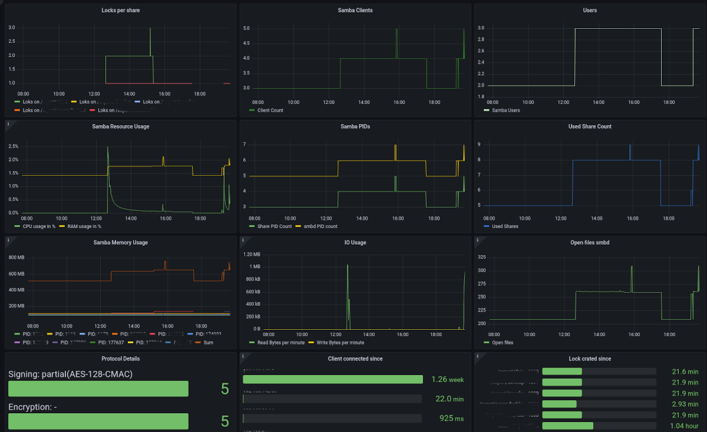

Grafana Stack Integration¶
Here you can find how to integrate the samba-exporter service with the prometheus monitoring stack.
Prometheus¶
To add this exporter to your prometheus database you have to add the endpoint as scrape job to the /etc/prometheus/prometheus.yml on your prometheus server. Therefor add the lines shown below:
- job_name: 'Samba exporter node on server.local'
metrics_path: metrics
static_configs:
- targets: ['server.local:9922']
Replace server.local with the network name of your samba server.
Grafana¶
For grafana an example dashboard is installed with the debian package and can be found at /usr/share/doc/samba-exporter/grafana/SambaService.json
Here is a screenshot of the example dashboard on a live system:

When importing this dashboard you need to change server.local to the network name of your samba server.
Last change at Sep 24, 2022 13:13:32 by Tobias Zellner - commit: 1e6c988